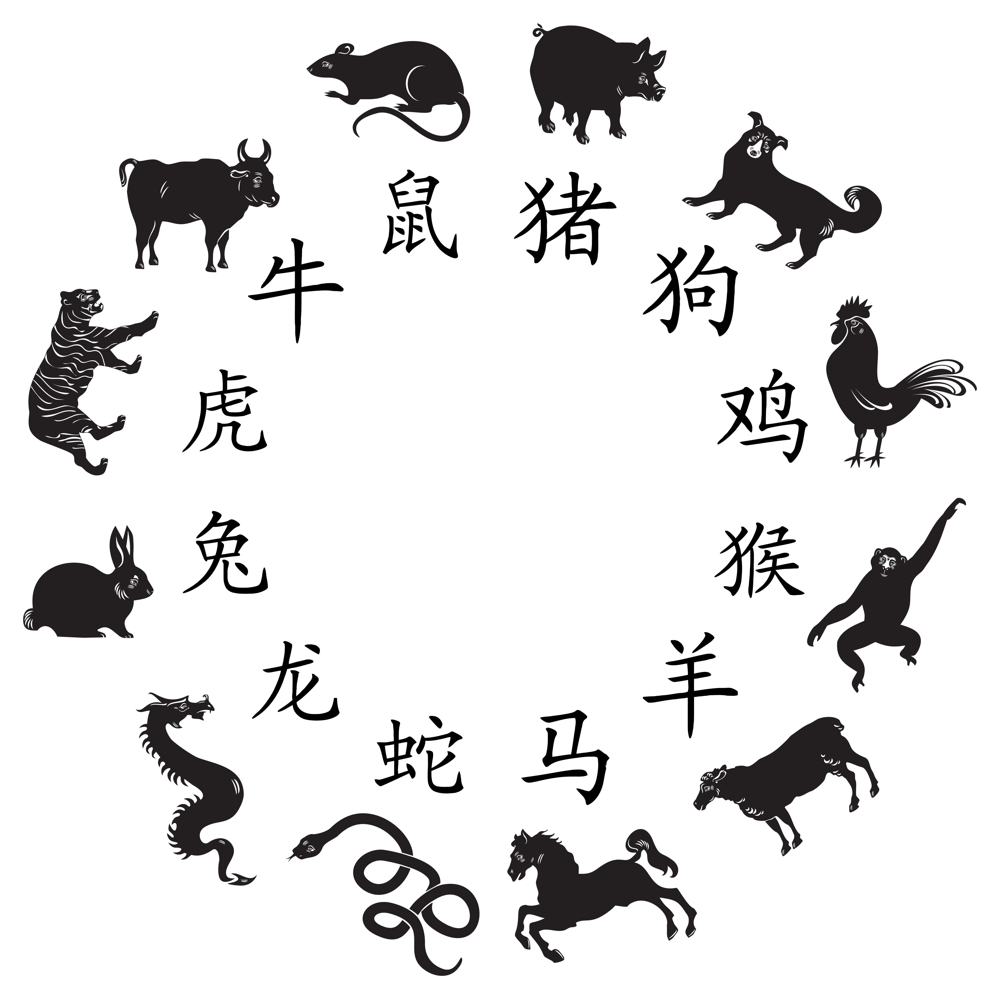

Sternzeichen
Niveau B1 Sprachhandlung Charakter beschreiben Thema Sternzeichen Grammatik Attributive und prädikative Adjektive
Übungsaufgabe 1 In China bestimmt mein Geburtsjahr mein Sternzeichen. Ich bin im Jahr 1987 geboren, mein Sternzeichen ist also Hase (兔子). Was ist Ihr Sternzeichen (00-05)?
Ich bin im Jahr … geboren. Mein Sternzeichen ist …

Übungsaufgabe 2 In Europa bestimmt nicht mein Geburtsjahr, sondern mein Geburtsdatum mein Sternzeichen. Ich bin am 30. August geboren, mein Sternzeichen ist also Jungfrau. Wie heißen die anderen europäischen Sternzeichen? Ordnen Sie zusammen mit Ihrer Partnerin die Namen den Bildern zu (05-15).
Steinbock – Wassermann – Fische – Widder – Stier – Zwillinge – Krebs – Löwe – Jungfrau – Waage – Skorpion – Schütze

Übungsaufgabe 3 Viele Europäer glauben, dass der Charakter eines Menschen von seinem Sternzeichen beeinflusst wird. Vermuten Sie: Welche Sternzeichen haben welche Eigenschaften? Notieren Sie neben die Bilder. Wenn Ihnen Wörter unbekannt sind, schlagen Sie im Wörterbuch nach (15-30).
gesellig - kreativ - ehrgeizig - streitlustig - verlässlich - eifersüchtig - wissbegierig - gutmütig - hilfsbereit - launisch - großzügig - perfektionistisch - pessimistisch - gerecht - eitel - ehrlich - nachtragend - selbstbewusst - pflichtbewusst - unternehmungslustig
Übungsaufgabe 4 Manche glauben, bestimmte Sternzeichen passen aufgrund ihres Charakters gut zusammen, als Freunde oder in einer Liebesbeziehung. Vermuten und diskutieren Sie mit Ihrer Partnerin, welche Sternzeichen gut zusammenpassen (30-40).
Ich glaube, Jungfrau und Stier passen gut zusammen, weil …
Ich vermute, Skorpion und Löwe sind ein gutes Paar, weil …
Pause (40-45)
Übungsaufgabe 5 In folgendem Text werden die Sternzeichen genau beschrieben. Ihre Lehrkraft liest den Text laut vor. Hören Sie zu und beantworten Sie folgende Fragen (45-65).
- Welche Charaktereigenschaften haben die Sternzeichen?
- An welchem Datum (von wann bis wann) sind die Sternzeichen geboren?
Übungsaufgabe 6 Auch die chinesischen Sternzeichen haben Charaktereigenschaften. Welche? Beschreiben Sie mit Ihrer Partnerin und im Plenum (65-75).
Übungsaufgabe 7 Bilden Sie kleine Gruppen. Beschreiben Sie reihum Ihre Charaktereigenschaften. Die anderen hören zu und schlagen ein passendes europäisches oder chinesisches Sternzeichen für Sie vor. Was ist Ihr wahres Sternzeichen? Passt es zu Ihnen? Diskutieren Sie (75-90).